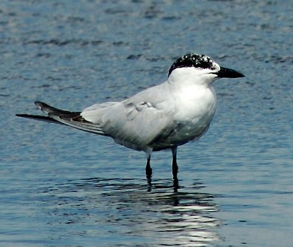

गल-बिल्ड टर्नGull-billed Tern
Gelochelidon nilotica · Laridae · BRD-0298

- Scientific name वैज्ञानिक नाम
- Gelochelidon nilotica (J.F.Gmelin, 1789)
- Family कुल
- Laridae
- Hindi हिंदी
- गल-बिल्ड टर्न
- Local names स्थानीय नाम
- gull billed tern, gal bild tarn, gal-bild tern
- Status here यहाँ की स्थिति
- native
- Movement आवागमन
- Migrant
- Known from कहाँ दर्ज
- Others have published records from the Basti–Ayodhya districts बस्ती–अयोध्या के ज़िलों से दूसरों के प्रकाशित अभिलेख
- IUCN IUCN
- LC
- Review समीक्षा
- not yet reviewed
When to look कब देखें
Migrant प्रवासी. Expected mainly in October, November, December, January, February, March. मुख्यतः अक्टूबर, नवंबर, दिसंबर, जनवरी, फ़रवरी, मार्च में अपेक्षित।
Breeds across temperate Eurasia and western Asia; winters on inland wetlands, lakes, and river systems of the Gangetic plain from October to March (Grimmett et al. 2011). All migrants and visitors →
Tell it apart from इनसे अलग पहचानें
गल-बिल्ड टर्न / Gull-billed Tern
Gelochelidon nilotica (J.F.Gmelin, 1789) — Laridae
गल-बिल्ड टर्न — सर्दियों में मध्य एशिया और यूरोप से उत्तर प्रदेश की झीलों, तालों और बड़ी नदियों पर आने वाला एक मजबूत जलपक्षी है। दूसरी प्रमथ (टर्न) चिड़ियों की तरह इसकी चोंच पतली नहीं होती बल्कि समुद्री बगुले (गल) की तरह मोटी और काली होती है। यह पानी में गोता लगाने के बजाय पानी की सतह और खेतों के ऊपर उड़ते हुए कीड़े-मकोड़े और छोटी मछलियां पकड़ता है।
Quick Identification त्वरित पहचान
| Feature | Description |
|---|---|
| Bill structure | Stout, heavy, and deep-based jet-black bill, resembling a small gull rather than a typical slender-billed tern |
| Crown pattern | White with dark streaks and a conspicuous black patch around eye and ear-coverts in non-breeding winter |
| Upperparts | Pale pearl-grey mantle, back, and wings; translucent white inner flight feathers |
| Underparts | Pure gleaming snow-white breast, belly, and undertail coverts |
| Tail structure | Relatively short greyish-white tail with a shallow fork; long black legs |
Medium-large, stoutly built pale tern immediately picked out from slender marsh terns by its heavy, all-black gull-like bill and long black legs. In winter, adults show a clean white head with dark streaking around the eye and ear-coverts.
Field tip: Scan the open water margins of Bakhira Lake or the Ghaghara floodplains from October onwards; look for a tern that hawks over marshes rather than hovering and plunge-diving.
हिंदी: मोटी, भारी और पूरी काली चोंच इस टर्न की सबसे खास पहचान है। सर्दियों में इसका सिर सफेद होता है और आंखों के पास काला धब्बा रहता है। इसके पैर काले और लंबे होते हैं।
Morphology आकारिकी
Biometrics as given by Baker (1929) as Gelochelidon nilotica nilotica:
| Measurement | Value | Source |
|---|---|---|
| Wing | 287 (exceptional) to 333 mm | Baker (1929) as Gelochelidon nilotica nilotica |
| Tail | 121 to 118 mm | Baker (1929) as Gelochelidon nilotica nilotica |
| Tarsus | 38 to 37 mm | Baker (1929) as Gelochelidon nilotica nilotica |
| Culmen | 35 to 41 mm | Baker (1929) as Gelochelidon nilotica nilotica |
Adult in non-breeding winter plumage displays pure white forehead, lores, and crown, finely streaked with blackish-grey towards the nape. A prominent patch of dense black streaks surrounds the eye and extends over the ear-coverts. Mantle, scapulars, and upper wing-coverts are pale pearl-grey; flight feathers are silvery-grey with darker tips. Entire lower plumage is immaculate white. Tail is pale pearl-grey, moderately forked. Bill is stout, deep, and entirely black; iris is dark brown; legs and feet are black. Breeding plumage (acquired before spring departure) features a solid velvet-black cap from forehead to nape.
Vocalisations. A harsh, rasping, guttural laughing call rendered as kah-huk, kah-huk or za-za-za, uttered frequently while flying over marshland.
हिंदी: इसके पंख लंबे और शरीर पर मोती जैसा हल्का स्लेटी रंग होता है (Baker 1929 as Gelochelidon nilotica nilotica)। चोंच और पैर पूरी तरह काले होते हैं। सर्दियों में सिर का काला ताज हट जाता है और केवल आंख के पास काली चित्ती बचती है।
Behaviour & Ecology व्यवहार और पारिस्थितिकी
Displays versatile foraging techniques that distinguish it from strictly plunge-diving river terns. While it occasionally dips to water surfaces to snatch small fish, it predominantly hunts by coursing low over marshy shorelines, reedbeds, and adjacent flooded pastures, hawking insects in flight like a pratincole. It also descends to dry ground or mudflats to seize terrestrial prey. Flight is buoyant, deliberate, and powerful, with steady wing-beats on broad wings. Birds roost communally on sandy bars and mudflats alongside gulls.
हिंदी: यह केवल पानी में गोता मारकर मछली नहीं पकड़ता, बल्कि खेतों और दलदली किनारों पर उड़ते हुए कीड़ों को हवा में ही लपक लेता है। यह जमीन और कीचड़ पर बैठकर भी कीड़े चुनता है। यह शाम को रेतीले किनारों पर झुंड में आराम करता है।
Life Cycle / Phenology जीवन चक्र
A non-breeding winter visitor to northern India, arriving from Palearctic breeding grounds in October and remaining through March. Breeding occurs during the northern summer across temperate Europe, southern Russia, Kazakhstan, and western China on sandy islands, inland salt lakes, and coastal lagoons. Courting males present freshly caught fish to females. In early spring, wintering birds in eastern Uttar Pradesh molt into their striking black-capped breeding dress before undertaking northward migration.
हिंदी: यह उत्तर प्रदेश में केवल सर्दियों का मेहमान है (अक्टूबर से मार्च)। यह यूरोप और मध्य एशिया के ठंडे इलाकों में गर्मियों में अंडे देता है। वसंत ऋतु में अपने देश लौटने से पहले इसके सिर पर फिर से गहरा काला ताज आ जाता है।
Host Plants or Prey आहार
Highly opportunistic and varied diet. It consumes large flying insects, dragonflies, mole crickets, beetles, and grasshoppers caught over marshes and agricultural fields. In shallow water it feeds upon small fishes, freshwater prawns, tadpoles, and small frogs, deftly plucking them from the surface without submerging its body.
हिंदी: इसका आहार बहुत विविध है। यह हवा में उड़ते बड़े कीड़े, टिड्डे, पतंगे और ड्रैगनफ्लाई पकड़ता है। पानी की सतह से यह छोटी मछलियां, झींगे और मेंढक के बच्चे बिना डूबे चोंच से उठा लेता है।
Predators / Natural Enemies शत्रु
Wintering flocks on open mudflats are preyed upon by wetland raptors such as the Western Marsh Harrier (Circus aeruginosus) and larger wintering falcons. Roosting birds on sandbars are vulnerable at night to golden jackals and feral dogs.
हिंदी: दलदल और झीलों के ऊपर उड़ते समय दलदली बाज (मार्श हैरियर) और बहरी इसका शिकार कर सकते हैं। रात में रेतीले किनारों पर सोते समय सियार और आवारा कुत्तों से खतरा रहता है।
Agricultural / Human Relevance कृषि प्रासंगिकता
Protected under the Wildlife (Protection) Act 1972. Highly beneficial to farming communities because of its voracious appetite for crop-damaging insects, locusts, and grasshoppers over flooded paddy fields and fallow ground. It causes no damage to crops or commercial fisheries.
हिंदी: वन्यजीव (संरक्षण) अधिनियम 1972 के तहत संरक्षित। यह धान के खेतों और नमी वाले इलाकों में फसलों को नुकसान पहुंचाने वाले टिड्डों और हानिकारक कीटों को खाकर किसानों की मदद करता है।
Expected Locally स्थानीय रूप से अपेक्षित
Not a field record. Written from published accounts for eastern Uttar Pradesh. No confirmed local sighting yet — if you have seen it, that is what the atlas needs.
अभी तक स्थानीय पुष्टि नहीं। यह विवरण प्रकाशित स्रोतों से है, किसी अवलोकन से नहीं।
Frequents large natural lakes, floodplains, wide river channels, and reservoir margins during the winter season. Observers in eastern Uttar Pradesh should look around Bakhira Bird Sanctuary, major oxbow tals, and sandy river banks along the Ghaghara River between October and March.
GBIF holds published records from these districts.
A first local record for the atlas would be a clear photograph showing plumage details, accompanied by date, time, and precise location coordinates sent through the project's About page.
हिंदी: यह पक्षी सर्दियों (अक्टूबर से मार्च) में बखिरा झील, बड़े तालों और घाघरा नदी के चौड़े पाटों पर देखा जा सकता है। तालाबों और नम खेतों के ऊपर उड़ते हुए इसकी पहचान की जानी चाहिए।
Distribution वितरण
Global range: Cosmopolitan distribution across southern Europe, temperate and subtropical Asia, Africa, Australasia, and the Americas; northern populations are migratory.
In India: Widespread winter visitor to inland lakes, rivers, and coastal wetlands throughout northern and peninsular India; localized breeding in northwest India and Pakistan.
In Uttar Pradesh: Regular winter visitor to major wetland complexes and river corridors across the state.
In Basti district / eastern UP: Expected as a regular winter visitor and passage migrant across major waterbodies and river basins.
हिंदी: यह पूरे विश्व में पाया जाने वाला पक्षी है जो सर्दियों में भारत के मैदानी इलाकों में आता है। उत्तर प्रदेश की लगभग सभी प्रमुख झीलों, जलाशयों और नदियों में सर्दियों में इसकी मौजूदगी दर्ज है।
Research Questions शोध प्रश्न
- What proportion of winter diet in eastern Uttar Pradesh consists of terrestrial insects gleaned from agricultural fields versus aquatic prey?
- How do seasonal water level declines in oxbow tals influence foraging site selection from December to February? / क्या तालों में पानी कम होने पर इस पक्षी के भोजन खोजने की जगह बदलती है?
- Does the gull-billed tern establish regular feeding territories over specific paddy complexes or wander nomadically?
- A schoolchild can visit a local tal in winter to check whether any pale tern has a stout black bill and catches insects in flight / क्या कोई बच्चा सर्दियों में झील पर जाकर मोटी काली चोंच वाली टर्न को हवा में कीड़े पकड़ते देख सकता है?
- When do the first individuals acquire full black breeding caps before northbound departure in spring?
हिंदी: बसंत में मध्य एशिया लौटने से पहले किन महीनों में इसके सिर पर पूरी तरह काला ताज आ जाता है? क्या यह पक्षी धान के खेतों में ज्यादा कीड़े खाता है या तालाबों में मछलियां?
Similar Species मिलती-जुलती प्रजातियाँ
| Species | How to tell apart | हिंदी | |
|---|---|---|---|
| Whiskered Tern \ | Chlidonias hybrida | Much smaller size, slender reddish or blackish bill, darker grey mantle, and distinct fluttering flight | व्हिस्कर्ड टर्न आकार में काफी छोटी होती है और उसकी चोंच बहुत पतली होती है |
| River Tern \ | Sterna aurantia | Bright yellow heavy bill of typical pointed shape, deeply forked tail, and yellow legs | रिवर टर्न की चोंच चमकीली पीली होती है और पूंछ बहुत गहरी दोमुंही होती है |
Field rule: Medium-large pale tern with a stout, deep-based all-black gull-like bill and habit of hawking over marshland and fields.
हिंदी: मोटी, गहरी काली चोंच और खेतों व दलदलों के ऊपर उड़ते हुए कीड़े पकड़ने की आदत से यह दूसरी टर्न से एकदम अलग पहचानी जाती है।
Taxonomy & Classification वर्गीकरण
Original description. J.F. Gmelin (1789) — see GBIF.
Subspecies. Polytypic species; Palearctic wintering visitors to northern India belong to the nominate subspecies Gelochelidon nilotica nilotica. Baker (1929) describes this form under Gelochelidon nilotica nilotica.
Family and order placement. Belongs to the family Laridae, order Charadriiformes, class Aves.
Phylogenetic notes. Often retained in the monotypic or small genus Gelochelidon, separated from Sterna by its stout bill and terrestrial hawking ecology.
IUCN status rationale. Assessed globally as Least Concern (LC) by IUCN (BirdLife International 2024) owing to its vast circumpolar breeding and wintering range.
हिंदी: इसका वैज्ञानिक विवरण 1789 में ग्मेलिन ने दिया था। यह लैरिडी कुल का पक्षी है और वैश्विक स्तर पर कम चिंताजनक श्रेणी में सूचीबद्ध है।
Photo Gallery फोटो गैलरी
No photos yet — add field photos to media/species/gull_billed_tern/ and run node scripts/sync_photos.js.
Photos needed आवश्यक फोटो
- [ ] Adult in winter plumage showing stout black bill and white head with eye patch (सर्दियों के रूप में मोटी काली चोंच और आंखों के पास काला धब्बा)
- [ ] Individual hawking low over marshy vegetation (दलदली घास के ऊपर उड़कर कीड़े पकड़ता पक्षी)
- [ ] Roosting flock resting on sandy river spit (रेतीले किनारे पर आराम करता झुंड)
References संदर्भ
- Original description: J.F. Gmelin, 1789 — see GBIF.
- Baker, E. C. S. (1929). The Fauna of British India, Including Ceylon and Burma: Birds. 2nd ed., Vol. 6. Taylor & Francis, London. (as Gelochelidon nilotica nilotica).
- Ali, S. & Ripley, S. D. (1983). Handbook of the Birds of India and Pakistan. Compact ed. Oxford University Press, New Delhi.
- Grimmett, R., Inskipp, C. & Inskipp, T. (2011). Birds of the Indian Subcontinent. 2nd ed. Christopher Helm, London.
- Rasmussen, P. C. & Anderton, J. C. (2012). Birds of South Asia: The Ripley Guide. Vols. 1–2. 2nd ed. Smithsonian Institution and Lynx Edicions.
- IUCN Red List of Threatened Species: Gelochelidon nilotica, 2024.
- GBIF Occurrence Data — Gelochelidon nilotica, India (2025).
Source file: species/fauna/birds/gull_billed_tern.md